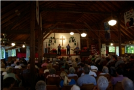
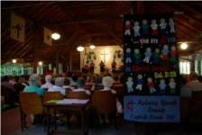
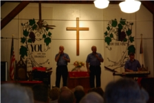
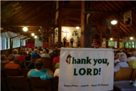
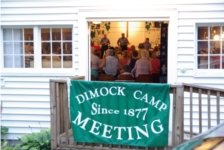

HOME
OUR HISTORY
A PRAYER
2012 SCHEDULE
OTHER EVENTS
REKINDLING YOUR SPIRIT
LODGING
COTTAGE AVAILABILITY
NEARBY ATTRACTIONS
DIRECTIONS
CONTACT US
DIMOCK
Camp Meeting Ground
Serving Christ in the Endless Mountains
2012 Dimock Schedule
Theme: God loves us all; God's Mission in the Neighborhood and Around the World
July 1 - Opening Hymn Sing with
Joan and Nelson Reppert
of Ithaca, NY, both of whom have been active in congregational music in
United Methodist venues.
July 8 - The Jacobs Brothers -
Mike and Bob Jacobs, and Mike Lawver - of Dillsburg, PA,
who have been sharing the gospel of Jesus Christ through song and testimony since
1962 across the US.
July 15 - One Voice: a returning trio from Dimock composed
of Gene Hubbard, Janet Lunger and Rosi
Hibbard now in their 16th year.
July 22 - UM Pastor Marcelle Dotson brings considerable international
experience to
Field of Grace Community of Faith,
a multi-cultural, multi-ethnic church start in Wilkes-Barre.
July 29 - Rev. Bob Kadlecik and members of the
Bridgewater Baptist Church
return with inspirational music and message.
August 5 - We welcome the
Daryl Willow Ministries, "a gospel music, preaching
and testimony ministry" from Swengel, PA.
August 1 - Floss Krieger of
Hemlock Grove UMC will
share slides and speak of her many mission activities in Africa.
August 19 -
Commandment 11,
Scott Jacobs (a son of one of the Jacobs brothers)
leads this music ministry from Simpsonville, SC,
which ministers to prisons and recovery centers.
August 26 - Pastor Nick Keeney of the
Dorranceton United Methodist Church
September 2 - Seasonal concluding service of Holy Communion with the
Rev. Bill Brown of the Campground and Shippensburg, PA.





of Kingston, PA, where prayer shawl and neighborhood mission are being
blessed.
Fellowship and refreshments are served in the dining hall following each service.
The grounds are located a half mile west of Rt. 29 in Dimock, Pa.
(See DIRECTIONS for further details.)
For information about the program, contact Linda Schiefer at
(570)457-0379.